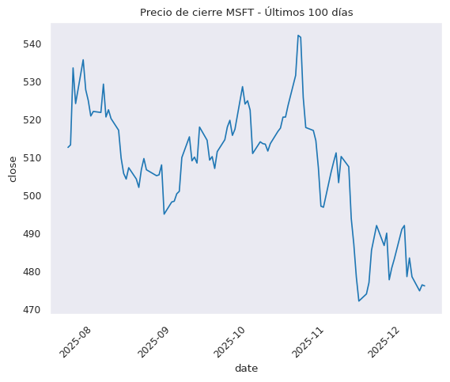
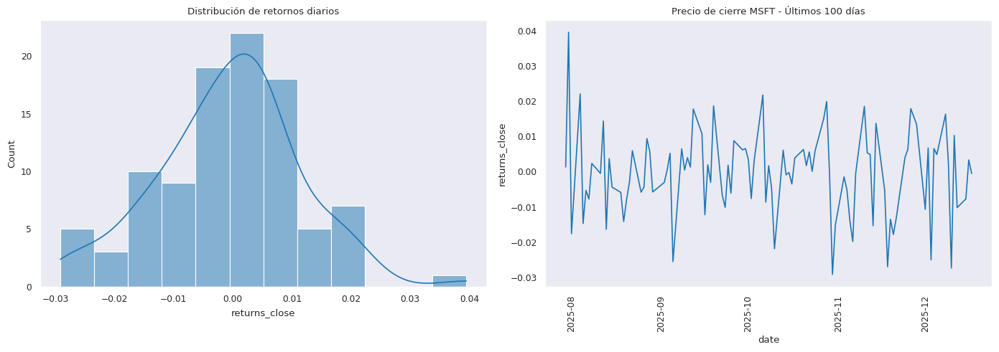
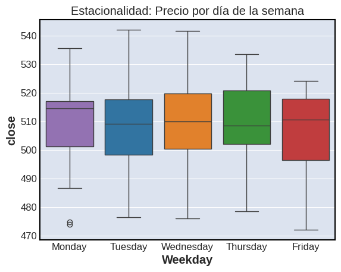
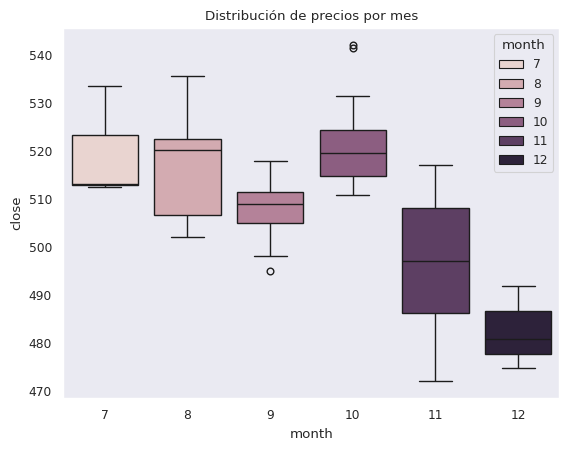
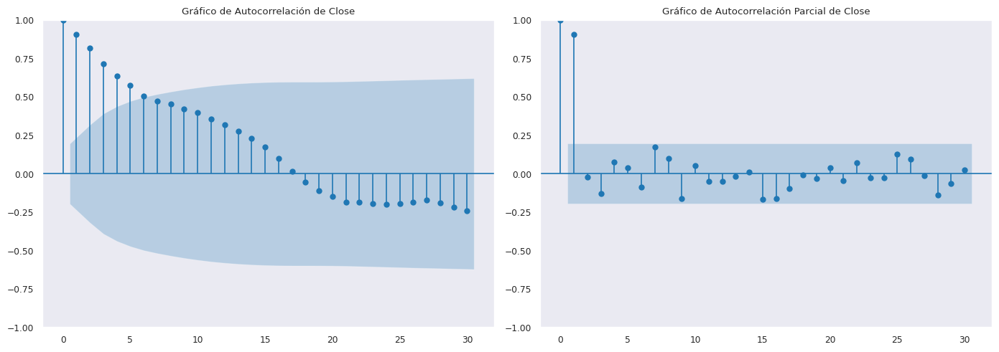
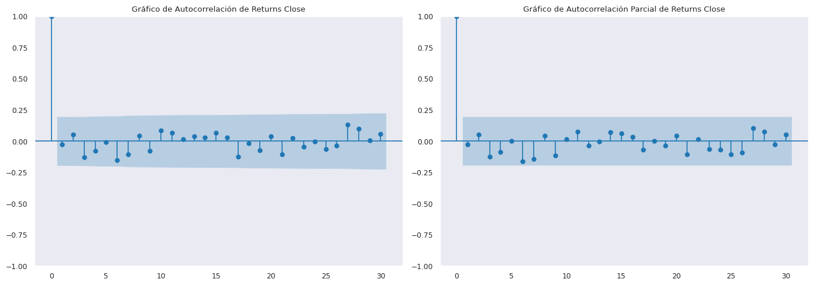
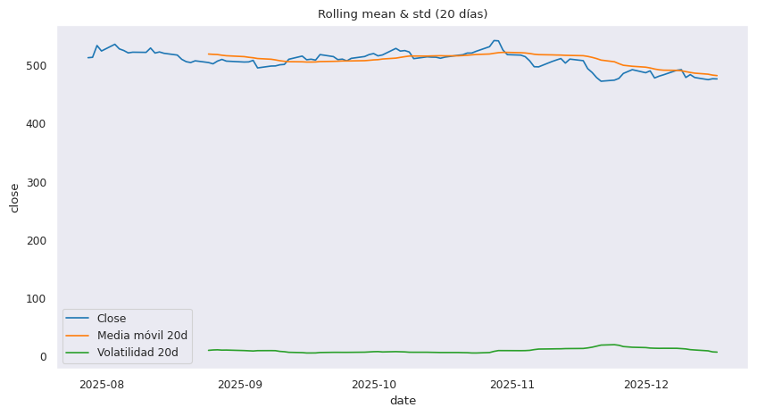
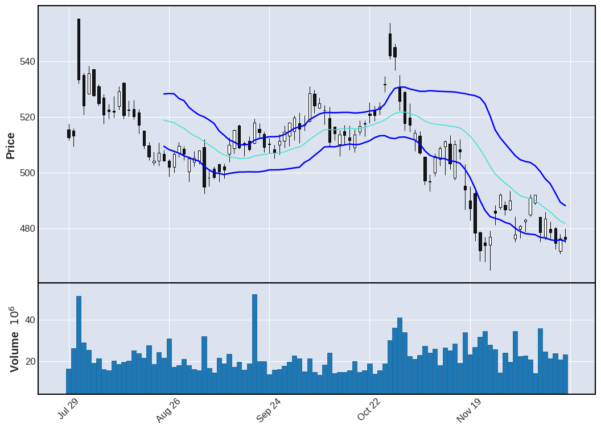
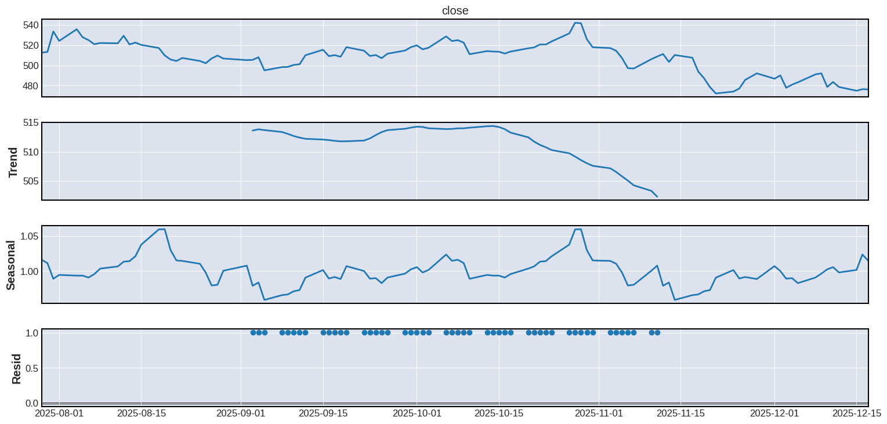

import numpy as np
import matplotlib.pyplot as plt
import seaborn as sns
import pandas as pd
import plotly.graph_objects as go
import plotly.io as pio
from datetime import datetime
from alpha_vantage.timeseries import TimeSeries
import mplfinance as mpf
from statsmodels.graphics.tsaplots import plot_pacf, plot_acf
from statsmodels.tsa.seasonal import seasonal_decompose
from statsmodels.tsa.stattools import adfuller
from sklearn.linear_model import LinearRegression, Ridge, Lasso, ElasticNet
from sklearn.ensemble import RandomForestRegressor, GradientBoostingRegressor
from sklearn.metrics import mean_absolute_error, root_mean_squared_error, r2_score
from skforecast.recursive import ForecasterRecursive
from skforecast.model_selection import backtesting_forecaster, TimeSeriesFold, grid_search_forecaster
sns.set_style("dark")
sns.set_context("paper") Análisis de MSFT
Se realiza un análisis de las acciones de Microsoft en tiempo real por día para ver como se comporta frente al mercado.
Se utiliza la API de Alpha Vantage que es un servicio que proporciona datos financieros en tiempo real e históricos.
El notebook se actualiza a las 19:00, hora de Bolivia (UTC-4)
Cargar librerias
print(datetime.now())2025-12-18 09:51:32.802599Obtener datos
Se realiza la obtención de datos por API de la página web de Alpha Vantage y luego se renombraron las columnas
api_key = "G1IMZVJ1KGOAPL7Y"
ts = TimeSeries(key=api_key, output_format='pandas')
df, meta_data = ts.get_daily(symbol='MSFT', outputsize='compact' )
df = df.rename(columns={
'1. open':'open', '2. high':'high', '3. low':'low',
'4. close':'close', '5. volume':'volume'
})
df = df.sort_index()
df.tail()| open | high | low | close | volume | |
|---|---|---|---|---|---|
| date | |||||
| 2025-12-11 | 476.630 | 486.0300 | 475.86 | 483.47 | 24669180.0 |
| 2025-12-12 | 479.820 | 482.4500 | 476.34 | 478.53 | 21248102.0 |
| 2025-12-15 | 480.100 | 480.7205 | 472.52 | 474.82 | 23727694.0 |
| 2025-12-16 | 471.905 | 477.8900 | 470.88 | 476.39 | 20705560.0 |
| 2025-12-17 | 476.905 | 480.0000 | 475.00 | 476.12 | 23246350.0 |
Se gráfico los ultimos 100 días del cierre de las acciones de Microsoft
sns.lineplot(x=df.index, y=df['close'])
plt.title("Precio de cierre MSFT - Últimos 100 días")
plt.xticks(rotation=45);
La volatibilidad de los datos es baja, ya que los valores se central alrededor de 0
df['returns_close'] = df['close'].pct_change(fill_method=None)
fig, axes = plt.subplots(1, 2, figsize=(14, 5))
sns.histplot(df['returns_close'].dropna(), kde=True, ax=axes[0])
axes[0].set_title("Distribución de retornos diarios")
sns.lineplot(x=df.index, y=df['returns_close'], ax=axes[1])
axes[1].set_title("Precio de cierre MSFT - Últimos 100 días")
axes[1].tick_params(axis='x', rotation=90)
plt.tight_layout();
Gráfico de la estacionalidad agrupado por cada día de la semana
df['Weekday'] = df.index.day_name()
sns.boxplot(x='Weekday', y='close', data=df,
order=['Monday','Tuesday','Wednesday','Thursday','Friday'],
hue="Weekday")
plt.title("Estacionalidad: Precio por día de la semana");
Gráfico de la estacionalidad por mes
sns.set_style("dark")
df['month'] = df.index.month
sns.boxplot(x='month', y='close', data=df, hue="month")
plt.title("Distribución de precios por mes");
Gráficos de Autocorrelación en Close y Returns Close
Gráfico de Autocorrelación y Autocorrelación Parcial de Close, en el cual se observa que la 1ra gráfica existe rezagos significativos, mientras que en la 2da gráfica solo hay 1 rezago significativo.
fig, axes = plt.subplots(1, 2, figsize=(14, 5))
plot_acf(df.close, lags=30, ax=axes[0], title="Gráfico de Autocorrelación de Close")
plot_pacf(df.close, lags=30, ax=axes[1], title="Gráfico de Autocorrelación Parcial de Close")
plt.tight_layout();
Con respecto a Returns Close no hay rezagos significativos
fig, axes = plt.subplots(1, 2, figsize=(14, 5))
plot_acf(df.returns_close.dropna(), lags=30, ax=axes[0], title="Gráfico de Autocorrelación de Returns Close")
plot_pacf(df.returns_close.dropna(), lags=30, ax=axes[1], title="Gráfico de Autocorrelación Parcial de Returns Close")
plt.tight_layout();
La tendencia y la volativilidad de Close se mantienen constante, con una ligera bajada
df['rolling_mean'] = df['close'].rolling(window=20).mean()
df['rolling_std'] = df['close'].rolling(window=20).std()
plt.figure(figsize=(10,5))
sns.lineplot(x=df.index, y=df['close'], label='Close')
sns.lineplot(x=df.index, y=df['rolling_mean'], label='Media móvil 20d')
sns.lineplot(x=df.index, y=df['rolling_std'], label='Volatilidad 20d')
plt.title("Rolling mean & std (20 días)")
plt.legend();
El gráfico muestra la evolución del precio de MSFT con velas japonesas con bandas, volumen y una media móvil de 20 días.
Se puede observa que el precio en ciertas epocas tenia una tendencia alcista y en otras hubo una tendencia a la baja
En la parte baja del gráfico no se nota claramente si los movimientos brusco del volumen afecten al precio.
upper_band = df.rolling_mean + df.rolling_std
lower_band = df.rolling_mean - df.rolling_std
# Crear addplots
ap = [
mpf.make_addplot(upper_band, color='blue'),
mpf.make_addplot(lower_band, color='blue'),
]
mpf.plot( df, type='candle', volume=True, mav=(20), figscale=1.7, addplot=ap)
Test de estacionariedad (ADF test) El p-value es < 0.05, la serie es estacionaria
print('p-value:', adfuller(df['returns_close'].dropna())[1])p-value: 1.1492937796563533e-17Descomposición estacional utilizando promedios móviles
seasonal_decompose(df['close'], model='mul', period=50).plot().set_size_inches(18,8);
Preprocesamiento
Se crea una serie que contenga los datos de Close, el índice se cambia de formato a una frecuencia de Business Day, y se rellena los dias festivos con valores anteriores
Cada 7 días el modelo aprender a pronosticar el valor
serie = df['close']
serie.index = pd.to_datetime(serie.index)
serie = serie.asfreq('B')
serie = serie.ffill()
horizon = 7
initial_train_size = len(serie) - 50 Modelado
Se selecciona varios modelos para elegir el modelo con el menor RMSE
modelos = {
"linreg": LinearRegression(),
"ridge": Ridge(random_state=42),
"lasso": Lasso(random_state=42),
"enet": ElasticNet(random_state=42),
"rf": RandomForestRegressor(random_state=42, n_jobs=-1),
"gb": GradientBoostingRegressor(random_state=42)
}
resultados = {}
cv_esquema = TimeSeriesFold(
initial_train_size = initial_train_size,
steps = horizon,
refit = False
)
for name, modelo in modelos.items():
forecaster = ForecasterRecursive(estimator=modelo, lags=20)
_, preds = backtesting_forecaster(
forecaster = forecaster,
y = serie,
cv = cv_esquema,
metric = 'mean_squared_error',
verbose = False,
show_progress = False
)
y_real = serie.loc[preds.index]
resultados[name] = {
"RMSE": root_mean_squared_error(y_real, preds['pred']),
"MAE": mean_absolute_error(y_real, preds['pred']),
"R2": r2_score(y_real, preds['pred'])
}
df_resultados = pd.DataFrame(resultados).transpose().sort_values("RMSE")
print("\n--- Ranking de Modelos (Ordenados por RMSE) ---")
print(df_resultados)
--- Ranking de Modelos (Ordenados por RMSE) ---
RMSE MAE R2
lasso 16.255118 13.172454 0.247065
enet 16.386125 13.150448 0.234880
ridge 16.959332 13.505579 0.180414
linreg 16.970321 13.517292 0.179352
gb 20.005798 16.445986 -0.140483
rf 20.082475 16.040572 -0.149242Se realizara un optimización de los parametros en el mejor modelo.
param_grid = {
'ridge': {
'alpha': [0.01, 0.1, 1.0, 10.0, 50.0], 'fit_intercept': [True, False],
'solver': ['auto', 'svd', 'cholesky', 'lsqr']
},
'lasso': {
'alpha': [0.0001, 0.001, 0.01, 0.1, 1.0], 'fit_intercept': [True, False],
'selection': ['cyclic', 'random']
},
'enet': {
'alpha': [0.0001, 0.001, 0.01, 0.1], 'l1_ratio': [0.1, 0.3, 0.5, 0.7, 0.9],
'fit_intercept': [True, False], 'selection': ['cyclic', 'random']
},
'rf': {
'n_estimators': [50, 100, 200], 'max_depth': [3, 5, 10, None],
'min_samples_split': [2, 5, 10], 'min_samples_leaf': [1, 2, 4],
'max_features': ['sqrt', 'log2', None]
},
'gb': {
'n_estimators': [50, 100, 200], 'learning_rate': [0.01, 0.05, 0.1],
'max_depth': [2, 3, 4], 'subsample': [0.6, 0.8, 1.0], 'min_samples_split': [2, 5, 10]
}
}
top_model_name = df_resultados.index[0]
print(f"\n--- Optimizando {top_model_name} ---")
forecaster_best = ForecasterRecursive(
estimator = modelos[top_model_name],
lags = 20
)
resultado_grid = grid_search_forecaster(
forecaster = forecaster_best,
y = serie,
param_grid = param_grid[top_model_name],
cv = cv_esquema,
metric = 'mean_squared_error',
return_best = True,
verbose = False,
show_progress = False,
)
print(f"RMSE con Grid: ", np.sqrt(resultado_grid["mean_squared_error"][0]))
--- Optimizando lasso ---
`Forecaster` refitted using the best-found lags and parameters, and the whole data set:
Lags: [ 1 2 3 4 5 6 7 8 9 10 11 12 13 14 15 16 17 18 19 20]
Parameters: {'alpha': 1.0, 'fit_intercept': True, 'selection': 'cyclic'}
Backtesting metric: 264.22887724798346
RMSE con Grid: 16.255118493815523Entrenamiento final con todo el conjuto de datos y pronosticar los próximos 7 días
pio.renderers.default = "notebook_connected"
forecaster_best.fit(y=serie)
predicciones = forecaster_best.predict(steps=horizon)
historico = go.Scatter( x=serie.iloc[-30:].index, y=serie.iloc[-30:],
mode='lines+markers', name="Histórico (Últimos 30 días)"
)
pred = go.Scatter( x=predicciones.index, y=predicciones,
mode='lines+markers', name="Predicción a Futuro",
line=dict(color='red'), marker=dict(size=8)
)
fig = go.Figure(data=[historico, pred])
fig.update_layout(
title=f"MSFT: Predicción a 7 días con modelo {top_model_name.upper()}",
xaxis_title="Fecha", yaxis_title="Precio de Cierre",
template="plotly", legend=dict(x=1, y=1),
)
fig.show()print(f"Las predicciones para los próximos 7 días son\n {predicciones.round(3)}")Las predicciones para los próximos 7 días son
2025-12-18 481.486
2025-12-19 484.814
2025-12-22 487.940
2025-12-23 489.408
2025-12-24 490.040
2025-12-25 490.559
2025-12-26 490.070
Freq: B, Name: pred, dtype: float64